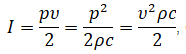

|
Содержание:
|
Интенсивность и мощность ультразвука
-
Интенсивность звука (сила звука) — средняя по времени энергия, переносимая звуковой волной через единичную площадку, перпендикулярную к направлению распространения волны, в единицу времени. Для периодического звука усреднение производится либо за промежуток времени большой по сравнению с периодом, либо за целое число периодов. Интенсивность ультразвука – величина, которая выражает мощность акустического поля в точке.
Для плоской синусоидальной бегущей волны интенсивность ультразвука I определяется по формуле:

где р — амплитуда звукового давления, Па
T — амплитуда колебательной скорости частиц, м/c
ρ — плотность среды, кг/м3
с — скорость звука, м/c
В сферической бегущей волне интенсивность ультразвука обратно пропорциональна квадрату расстояния от источника. В стоячей волне I = 0, т. е. потока звуковой энергии в среднем нет. Интенсивность ультразвука в гармонической плоской бегущей волне равна плотности энергии звуковой волны, умноженной на скорость звука. Поток звуковой энергии характеризуют так называемым вектором Умова — вектором плотности потока энергии звуковой волны, который можно представить как произведение интенсивности ультразвука на вектор волновой нормали, т. е. единичный вектор, перпендикулярный фронту волны. Если звуковое поле представляет собой суперпозицию гармонических волн различной частоты, то для вектора средней плотности потока звуковой энергии имеет место аддитивность составляющих.
Для излучателей, создающих плоскую волну, говорят об интенсивности излучения, понимая под этим удельную мощность излучателя, т. е. излучаемую мощность звука, отнесённую к единице площади излучающей поверхности.
Интенсивность звука измеряется в системе единиц СИ в Вт/м2. В ультразвуковой технике интервал изменения интенсивности ультразвука очень велик — от пороговых значений ~ 10-12 Вт/м2 до сотен кВт/м2 в фокусе ультразвуковых концентраторов.
Мощность звука — энергия, передаваемая звуковой волной через рассматриваемую поверхность в единицу времени. Различают мгновенное значение мощности ультразвука и среднее за период или за длительное время. Наибольший интерес представляет среднее значение мощности ультразвука, отнесённое к единице площади, т. н. средняя удельная мощность звука, или интенсивность звука.

|